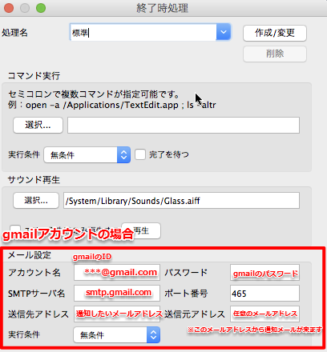

0. Introduction
This is a Manual Page of RapidCopy(FastCopy for GNU/Linux). Please read carefully the following points.
Based on the great original FastCopy v2.11.
Cheer the great original FastCopy up!
|
1. About
FastCopy is the Fastest Copy/Delete Software on Windows.
RapidCopy is portable version of FastCopy that runs GNU/Linux.
Automatically selects different methods according to whether Source and DestDir are in the same or different HDD.
| Diff HDD | Reading and writing are processed respectively in parallel by separate threads. |
| Same HDD | Reading is processed until the big buffer fills. When the big buffer filled, writing is started and processed in bulk.
|
Because Reading/Writing are processed with no OS cache at all, other applications don't easily become slow.
Include/Exclude Filter (UNIX Wildcard style) supported.
GUI and some function constructed by Qt Framework
For the purpose of performance, Using a POSIX system call to replace the Win32API.
Add a number of features such as xxHash verify and copy result EMail sending.
If you want to know the changes from FastCopy, Please refer to change list from FastCopyV2.11
This program is licensed under BSD License.
2. License
Copyright 2004-2012 SHIROUZU Hiroaki All rights reserved.
Copyright 2014-2016 Kengo Sawatsu All rights reserved.
Redistribution and use in source and binary forms, with or without modification, are permitted provided that the following conditions are met:
1. Redistributions of source code must retain the above copyright notice, this list of conditions and the following disclaimer.
2. Redistributions in binary form must reproduce the above copyright notice, this list of conditions and the following disclaimer in the documentation and/or other materials provided with the distribution.
THIS SOFTWARE IS PROVIDED BY SHIROUZU Hiroaki and Kengo Sawatsu ``AS IS'' AND ANY EXPRESS OR IMPLIED WARRANTIES, INCLUDING, BUT NOT LIMITED TO, THE IMPLIED WARRANTIES OF MERCHANTABILITY AND FITNESS FOR A PARTICULAR PURPOSE ARE DISCLAIMED. IN NO EVENT SHALL SHIROUZU Hiroaki OR CONTRIBUTORS BE LIABLE FOR ANY DIRECT, INDIRECT, INCIDENTAL, SPECIAL, EXEMPLARY, OR CONSEQUENTIAL DAMAGES (INCLUDING, BUT NOT LIMITED TO, PROCUREMENT OF SUBSTITUTE GOODS OR SERVICES; LOSS OF USE, DATA, OR PROFITS; OR BUSINESS INTERRUPTION) HOWEVER CAUSED AND ON ANY THEORY OF LIABILITY, WHETHER IN CONTRACT, STRICT LIABILITY, OR TORT (INCLUDING NEGLIGENCE OR OTHERWISE) ARISING IN ANY WAY OUT OF THE USE OF THIS SOFTWARE, EVEN IF ADVISED OF THE POSSIBILITY OF SUCH DAMAGE.
xxHash Library
Copyright (c) 2012-2014, Yann Collet
All rights reserved.
Redistribution and use in source and binary forms, with or without modification,
are permitted provided that the following conditions are met:
* Redistributions of source code must retain the above copyright notice, this
list of conditions and the following disclaimer.
* Redistributions in binary form must reproduce the above copyright notice, this
list of conditions and the following disclaimer in the documentation and/or
other materials provided with the distribution.
THIS SOFTWARE IS PROVIDED BY THE COPYRIGHT HOLDERS AND CONTRIBUTORS "AS IS" AND
ANY EXPRESS OR IMPLIED WARRANTIES, INCLUDING, BUT NOT LIMITED TO, THE IMPLIED
WARRANTIES OF MERCHANTABILITY AND FITNESS FOR A PARTICULAR PURPOSE ARE
DISCLAIMED. IN NO EVENT SHALL THE COPYRIGHT HOLDER OR CONTRIBUTORS BE LIABLE FOR
ANY DIRECT, INDIRECT, INCIDENTAL, SPECIAL, EXEMPLARY, OR CONSEQUENTIAL DAMAGES
(INCLUDING, BUT NOT LIMITED TO, PROCUREMENT OF SUBSTITUTE GOODS OR SERVICES;
LOSS OF USE, DATA, OR PROFITS; OR BUSINESS INTERRUPTION) HOWEVER CAUSED AND ON
ANY THEORY OF LIABILITY, WHETHER IN CONTRACT, STRICT LIABILITY, OR TORT
(INCLUDING NEGLIGENCE OR OTHERWISE) ARISING IN ANY WAY OUT OF THE USE OF THIS
SOFTWARE, EVEN IF ADVISED OF THE POSSIBILITY OF SUCH DAMAGE.
Copyright (c) 2013 Raivis Strogonovs
Simple Smtp for Qt5 source repository : https://github.com/xcoder123/SimpleSmtp_SSL_QT5
http://morf.lv
Permission is hereby granted, free of charge,
to any person obtaining a copy of this software and associated documentation files (the "Software"),
to deal in the Software without restriction, including without limitation the rights to use,
copy, modify, merge, publish, distribute, sublicense,and/or sell copies of the Software,
and to permit persons to whom the Software is furnished to do so, subject to the following conditions:
The above copyright notice and this permission notice shall be included in all copies
or substantial portions of the Software.
THE SOFTWARE IS PROVIDED "AS IS", WITHOUT WARRANTY OF ANY KIND, EXPRESS OR IMPLIED,
FITNESS FOR A PARTICULAR PURPOSE AND NONINFRINGEMENT.
IN NO EVENT SHALL THE AUTHORS OR COPYRIGHT HOLDERS BE LIABLE FOR ANY CLAIM,
DAMAGES OR OTHER LIABILITY,WHETHER IN AN ACTION OF CONTRACT, TORT OR OTHERWISE,
ARISING FROM, OUT OF OR IN CONNECTION WITH THE SOFTWARE OR THE USE OR OTHER DEALINGS IN THE SOFTWARE.
QBlowfish is licensed under the MIT License
Copyright © 2012 Roopesh Chander
Permission is hereby granted, free of charge, to any person obtaining
a copy of this software and associated documentation files (the
"Software"), to deal in the Software without restriction, including
without limitation the rights to use, copy, modify, merge, publish,
distribute, sublicense, and/or sell copies of the Software, and to
permit persons to whom the Software is furnished to do so, subject
to the following conditions:
The above copyright notice and this permission notice shall be
included in all copies or substantial portions of the Software.
THE SOFTWARE IS PROVIDED "AS IS", WITHOUT WARRANTY OF ANY KIND,
EXPRESS OR IMPLIED, INCLUDING BUT NOT LIMITED TO THE WARRANTIES OF
MERCHANTABILITY, FITNESS FOR A PARTICULAR PURPOSE AND
NONINFRINGEMENT. IN NO EVENT SHALL THE AUTHORS OR COPYRIGHT HOLDERS
BE LIABLE FOR ANY CLAIM, DAMAGES OR OTHER LIABILITY, WHETHER IN AN
ACTION OF CONTRACT, TORT OR OTHERWISE, ARISING FROM, OUT OF OR IN
CONNECTION WITH THE SOFTWARE OR THE USE OR OTHER DEALINGS IN THE
SOFTWARE.
3. Environment
Compiled with CentOS7(x64).
need Library as follows.
Qt 5.4.2 or later
libacl-devel
libbsd-devel
4. Install/Uninstall
I hope that your compile is going well:)
5. Usage
Source / DestDir
Specified Source(s) / DestDir by D&D or FileDialog.
If you want to add files/dirs to the Source field by using drag and drop, simply drop with pushing Ctrl key.
You can also drag & drop to DestDir field.
You can not specify a symbolic link directly to the Source and DestDir.
(Please refer to the handling of symbolic links.)
Regarding different behavior whether the end of DestDir character is '/' or not.
Source is one directory and the end of DestDir character is NOT '/'
Copy source directory's contents to DestDir.
(DestDir/Contents_of_SourceDir)
Other cases
Copy source directory that including it self to DestDir.
(DestDir/SourceDir/Contents_of_SourceDir)
Operation mode
| Mode | Detail |
|---|
| Diff (No Overwrite) |
Copy if the same filename doesn't exist in destination. |
| Diff (Size/date) |
Copy if size or date is different, or if it doesn't exist (default) |
| Diff (Size) |
Copy if source filesize is different.
This mode requires "LTFS" checking. | |
| Diff (Newer) |
Copy if source date is newer or doesn't exist. |
| Copy (Overwrite all) |
Always copy/overwrite all. |
| Sync (Size/date) |
Copy if size or date is different, or doesn't exist.
In addition, delete all destination files/directories that don't exist in source. |
| Verify(Size) |
Don't run Copy. verify only.
In verify mode, this process is following differences as an error.
Different file size
File or folder exists in the Source, but is not present in DestDir
Unauthorized file of verification results
|
| Move (Overwrite all) |
Always copy/overwrite all and delete all copied source files. (It is able to change "Move (Overwrite all)" -> "Move (Size/date)" in settings dialog.) |
| Delete |
Delete all files/dirs by force. |
Buttons & Options
| Execute |
The copy operation is executed. While copy is executing, this button changes "Cancel..." button.
|
| Listing |
The files and directories list that will be copied and deleted are displayed.
output reference is here
(Compare file pairs that will be skipped(except skipping by filter), if this button is pushed with pushing Ctrl key(button label "listing" -> "listing+v"(*2))) |
| Buffer size |
Specify the size(MB) of the main buffer for Read/Write oprations. |
| Speed Control |
Specify "Full Speed", "Auto Slow"(*1), "9"~"1", "Suspend".
If you feel it is hogging resources, it is recommended to set to "Auto Slow" (If it detects mouse moving/active window changing (and fastcopy window isn't foreground), it is slowed down).
If "Full Speed" isn't selected, low process priority class is set.
(This setting is not saved by job manage) |
| NonStop |
Don't interrupt even if errors occur by Read/Write/Delete, and keep processing as much as possible.
(However, errors are displayed in the main window, and recorded in the error log.) |
| Verify |
Verify written files data.
By default, verify with MD5.
You can choose any of the hash algorithm in Settings->General Settings->I/O configuration.
... Action detail: Read(Src) -> MD5(Src) -> Write(Dst) -> Read(Dst) -> MD5(Dst) -> Compare MD5(Src/Dst)
(Of course, all actions are processed in parallel as much as possible)
|
| Estimate |
Display the estimated complete time. This means will cause RapidCopy to investigates source tree before starting. |
| Top |
RapidCopy window is always top-level. |
| Start at once |
Start at once without waiting for the finish of other RapidCopy instance(s) executing. (This button doesn't show when other RapidCopy isn't copying.) |
| "?" |
Show help |
(*1)It is slowed if RapidCopy window isn't foreground and it is detected mouse moving, by waiting beetween I/O, changing process priority, and changing maximum I/O size.
(*2)"Listing+V" mode is backward compatibility feature of the Windows version users. We recommend the use of the verify mode in RapidCopy.
| ACL |
Copy Access Control List.
|
| EA |
Copy EA(Extended Attribute).
notes:If target file contains ACL, copy ACL.
|
| LTFS |
Copy from/to Linear Tape File System(LTFS)
EA,ACL,Speed Control is disable.
Diff copy that uses the date can not be selected under LTFS.
Replace LTFS Prohibit char to '_'.
Please refer to the BBS for LTFS support information. |
| Wipe & Delete (prevent deleted files reviving) |
Rename filename and Overwrite random data before deleting. EA isn't overwritten. If NSA method is checked in setting dialog, Overwriting Random data process runs two times, and overwriting NULL data process runs once.
|
Symbolic link
| Mode | Actions |
|---|
| Diff/Copy |
By default,copy the symbolic link as link.(*1)
| | Move |
Always move the alias and symbolic link itself. |
| Delete |
Always remove the alias symbolic link itself. |
(*1):Will be the behavior of --recreate options equivalent of below is always active.
Hardlink
HardLink can be reproduced as much as possible, if specify "linkdest=1" in configuration file.
(In running, "TotalFiles:" format changes "number_of_files (number_of_dirs)" to "number_of_files / number_of_created_hardlinks (number_of_dirs)").
Please note that consumes 10MB about memory at the maximum per hard link entity 10000 files. (Path length dependent).
If "linkdest" option is enabled, --recreate is enabled tacitly.
File -> Open New Window
Open In New Window.
If you are running copy.you can't use this function.
File -> Save Bug Report
generate Bug Report Data.
Generate file to "$HOME/Desktop/YYYYMMDD-HHMMSS.zip"
JobMng -> Manage Single Job
Register/Restore parameters in main window as named job.
| Add/Modify |
Add/Modify prameters in main window(Source/DestDir, Operation mode, Buffer size, Nonstop/Verify/Estimate/ACL/AltStream/Wipe&Delete/Filter checkboxes, Filter strings, HDD mode) as named job. |
| Delete |
Delete registered job. |
JobMng -> JobList Mode
Save a set of job as JobList and run JobList as copybatch.
Job order can be changed.
JobList
Load job list, save, and delete.
| Create/Save List |
Create/save the contents of the current job list. |
| Delete list |
Delete current job list.
When deleting the job in the job list is all will be removed.
(If the job of the same name outside the deleted job list exists, it does not delete) |
| Force Launch |
If check off, a fatal error occurs in any of the job(ex:Src/Dst path invalid, memory allocate error), it does not start all subsequent job.
Please check to think well the order dependent.
|
JobList Edit
Adding a job to job list, delete, reorder,running etc..
Support D&D reorder.
| Add Job |
Add the contents of the current main window as a new job in the job list under the name of YYYYMMDD_HHMMSSZZZ. |
| Execute JobList |
Runs current job list. If job list is running,it will cancel button. |
| Cancel JobList |
Cancel current job and cancel all later job.
note:Can't cancel executed job(s). |
| Double click job in joblist |
change the name of the selected job. |
| Up key while holding down the Option(Alt) key |
It will raise the execution order of the job. |
| Down key while holding down the Option(Alt) key |
It will reduce the execution order of the job. |
| Drag and Drop in Job order |
Swap order. |
| Delete Job |
Delete job from the job list. |
| Delete all Job |
Delete all jobs from the job list. |
Notice for Joblist Mode
When the job list mode execution of the behavior of existing functions are changed as follows.
| Start at once |
Force run without waiting for the completion of execution of other RapidCopy.
|
| cancel... |
Cancel current job.(If next job exists,next job will start)
|
| Post-Process |
E-Mail,Execute Command,Play Sound, Runs at job list ends. |
| Log Settings |
Detailed log:Generate YYYYMMDD-HHMMSS-[joblistname].log(csv)file in the job list ends.
If a fatal error, such as at each job src / dst path fraud occurs, the error contents are output to the standard log. |
| CLI |
--auto_close:It does not automatically end if even one in a job in the job list error has occurred.
--force_close:Forcibly quit after the end all of the job. |
| Confirm before execute dialog |
"Confirm before execute" dialog is not displayed regardless of the setting. |
Preferences
General settings. (change Default values, I/O parameters, and Copy Options, etc)
I/O Settings -> MAX I/O(MB)
Specifies the Read / Write size when reading and writing data.
In the case of ultra-high-speed network environment, such as 10G Ethernet you may want to speed if you specify a 4-8MB.
Except under 10G environment, we recommended default value(1MB).
I/O Settings -> Verify mode
Select verify algroithm. Default is MD5
If you want to save CPU resources can be used to lower the CPU utilization by using the xxHash.
| Verify Mode | hash key length |
|---|
| SHA-1 | 160bit |
| MD5 | 128bit |
| xxHash | 64bit |
| SHA-2(256bit) | 256bit |
| SHA-2(512bit) | 512bit |
| SHA-3(256bit) | 256bit |
| SHA-3(512bit) | 512bit |
Log Settings
Default is "Write to Log" enabled.
Log output charset is UTF-8
| Number of history items Src/DestDir | need to restart |
| Write to Log(RapidCopy.log) | Write summary and error only. |
| Write EA(xattr) errors to Log | Write EA errors to Log. |
| Write ACL errors to Log | Write ACL erros to Log. |
| Write to detailed Log | Create the "Log/DATE".log file for each copy. If you check "verify", checksum add. |
| Write to detailed CSV |
Create the "Log/DATE".log file for each copy.
csv output format is no BOM and charset is UTF-8
It can be converted to xls using the data import feature of OpenOffice or LibreOffice
(Can't read the UTF-8 in MS Office) |
listup and detailed log format:
| + | Add file(including overwrite) |
| - | Delete file |
| Ends with "/" | Target is directory |
| Ends with "=>" | Target is HardLink |
| Ends with "->" | Target is Symbolic link |
Option -> Auto/Same/Diff HDD mode
Specify Auto/Same/Diff HDD mode(default: Auto).
Command + K shortcut toggles between disk modes (auto -> same -> diff ->...)
Option -> Swap Source<->DestDir
Swap Source for DestDir (for mutual update or etc).
Source/DestDir will be modified based on different behavior whether the end of DestDir character is '/' or not. (For example, If Source is "/Volumes/TEST/AAA/BBB" and DestDir is "/Volumes/TEST/AAA/BBB", then Source becomes "/Volumes/CCC/BBB" and DestDir becomes "/Volumes/TEST/AAA/")
If Source has two or more files/directories, this menu item is disabled.
Option -> Post-Process
Select Post-Process.
Set the action, such as sound settings and command execution or Email sending.
Also, user can add new Post-Process settings.
Sound play after running command. (reverse execution is the windows version)
Option -> Post-Process -> Execute Command
Execute commands in the background by handing it over to /usr/bin/sh
If you execute multi commands,You can separate by semicolon(";")
Option -> Post-Process -> Play Sound
Play any sound at the end.
Support file format is wav
Option -> Post-Process -> E-Mail
E-mail send a copy result.
Transmission protocol only support SMTPS.
gmail account only confirmed the operation. Configuration examples please refer to the following.

Option -> Show Filter
Specify the enable / disable of various filters.
Note: It is always disabled in move mode.
| Include |
Copy only the files/directories that match up specified strings(UNIX Wildcard style).
If you want to specify two or more strings, please use semicolon as separator.
If you want to specify directories, please add '\' to the end of directory name.
Note:If you specify a folder to Include/exclude filters, only the first matching folder is the copy target.
(even if there is more than one match folder you will copy only the first match folder)
(For example: *.txt; My Folder [0-9]\)
|
| Exclude |
Don't copy the files/directories that match up specified strings. |
| FromDate |
Don't copy the files that timestamp are older than specified date(format).
This can be specified by not only absolute format ("20090322") but also by relative format (10days before ... "-10D"). |
| ToDate |
Don't copy files with timestamps newer than this specified date. |
| MinSize |
Don't copy the files with sizes that are smaller than specified size.
High number can be abbreviated using K/M/G/T character (Kilo/Mega/Giga/Tera). |
| MaxSize |
Don't copy the files with sizes bigger than specified size. |
Include/Exclude filter(wildcard) format.
| * | Zero or more arbitrary characters |
| ? | One arbitrary character |
| [abc] | One character in "abc" |
| [^abc] | One character except "abc". |
| [a-z] | One character in "abc...xyz" |
| [0-9] | Any single character up to "0-9" |
| \ | Escape character (However, if '\' is the end of string character, it means a directory) |
（Note:Wild card specification same as QtFramework QRegExp::WildcardUnix)
FromDate/ToDate filter format.
| Absolute | Specify "YYYYMMDD"(year/month/day).
ex) "20090101" |
| Relative | Specify "+|- number W|D|h|m|s".
W|D|h|m|s means Weeks/Days/hours/minutes/seconds.
ex) "-12h" (This is case sensitive.) |
6. Command Line
A basic format is as follows.
RapidCopy [--options] [--to DestDir] Source1 Source2 …
1. Delimiter is blank character. Path name that contains a space character, escaped with a '\'
2. If you start from the terminal, the terminal side until the end by default GUI operation will be a wait state.
If you want to include in shell scripts, etc., please use the background execution and --auto_close and --force_close as necessary.
Supported options are as follows.
-h,--help … display help.
--cmd (noe|dif|upd|for|syn|ves|mov|del) …Specify operation mode.
（By default, "dif" is used. If "del" is specified, then "--to" option isn't used.）
| Operation Mode | GUI display |
|---|
| noe | Diff (No Overwrite) |
| dif | Diff (Size/date) |
| siz | Diff (Size) (*1) |
| upd | Diff (update) |
| for | Copy (Overwrite) |
| syn | Sync (Size/date) |
| ves | Verify (Size) |
| mov | Move (Overwrite) |
| del | Delete |
(*1)require "--ltfs true"
--auto_close ... Close automatically after execution is finished with no errors.
--force_close ... Close automatically and forcedly after execution is finished.
--open_window ... Don't stored in the task tray.
--estimate ... Estimate complete time.
--no_exec ... Don't start to execute.
--no_confirm_del ... Don't confirm before deleting.
--no_confirm_stop ... Don't Show error dialog, Even if critical errors occurred.
--error_stop (true|false) ... Show error dialog (and operation is interrupted), if an error occurred.
--bufsize N(MB) ... Specify the size(MB) of the main buffer for Read/Write opration.
--log (true|false) … Write the operation/errors information to the standard logfile(RapidCopy.log).
--logfile standardlogfilename ... Specify the filename of standard logfile.
--filelog (true|false|filename) ... Write to the detail filelog(detail of copy/delete files). It is stored YYYYMMDD-hhmmss-N.log in RapidCopy/Log directory. If using verify mode, write digest data as additional data. (To specify filelogname, --filelog filename).
--filecsv (true|false) ... Write to the detail filelog with csv format.Save destination and file name, please follow the instructions of --filelog.
If you specify a --filecsv you need to enable --filelog.
--skip_empty_dir (true|false) ... Skip to create empty directories when /include or /exclude option is used.
--job job_name ... Specify the job that is already registered.
--joblist joblist_name ... Specify the joblist that is already registered.
--force_start (true|false) ... Start at once without waiting for the finish of other RapidCopy executing.
--disk_mode (auto|same|diff) ... Specify Auto/Same/Diff HDD mode. (default:Auto)
--speed (full|autoslow|9-1|suspend) ... Specify speed control level.
--srcfile srcfiles.txt ... Specify source files by textfile. User is able to describe 1 filename per line. ( Attention: If a lot of files are specified, it will take many times to display/refresh Source display area.)
--include "..." ... Specify include filter.( details)
--exclude "..." ... Specify exclude filter.( details)
--from_date "..." ... Specify oldest timestamp filter. ( details)
--to_date "..." ... Specify newest timestamp filter. ( details)
--min_size "..." ... Specify minimum size filter. ( details)
--max_size "..." ... Specify maximum size filter. ( details)
--wipe_del (true|false) ... Rename filename and wipe(overwrite Random data) before deleting.
--acl (true|false) ... Copy ACL.
--ea (true|false) ... Copy EA(Extended Attribute).
--reparse (true|false) ... Copy Symlink as link. details）
--verify (md5|sh1|xxh|s22|s25|s32|s35|fal) ... Verify written files data
| Verify Mode | GUI display |
|---|
| md5 | MD5 |
| sh1 | SHA-1 |
| xxh | xxHash |
| s22 | SHA-2(256bit) |
| s25 | SHA-2(512bit) |
| s32 | SHA-3(256bit) |
| s35 | SHA-3(512bit) |
| fal | no Verify |
--linkdest (true|false) ...Reproduce hardlink as much as possible. details
--recreate (true|false) ... Change updating behavior "overwrite the target" to "delete and recreate the target". (If --linkdest option is enabled, this option is enabled by default.) If you want always to enable, write [main] recreate=1 in RapidCopy.ini.
--postproc (action_name|false) ... Specify post-process action name
--ltfs (true|false) ... Enable LTFS.
--nodot (true|false) ... Skip "." start files or folders.
--xpos (xpos) ... Specifies window Xpos. Need to specify with --ypos.
--ypos (ypos) ... Specifies window Ypos. Need to specify with --xpos
Ex) Copy "/Volumes/srchdd" to "/Volumes/dsthdd" by "diff(Size/Date)" mode.
RapidCopyPro --cmd dif --to /Volumes/dsthdd/ /Volumes/srchdd
RETURN VALUES
When --auto_close or --force_close or command argument error, return value to parent process.
Meaning of the return code is as follows.
| return value | Explanation |
|---|
| 0(EX_OK) | no error(error files and error dirs are 0) |
| 64(EX_USAGE) | arguments error. |
| 79 | error(One or more errors has occurred) |
7. Change list from fastcopy v2.11
Change from the Windows version v2.11, adding, main specification list of deleted is as follows.
Add
Improved operability of GUI such as ProgressBar.
Write completion time in detail file Log (verify valid at the time of verification completion time).
Add new verify algorithm
Add new operation mode.
Add new Post-Process function E-mail sending.
Support Linear Tape File System(LTFS) mode.
Add Job List Mode.
Change
Assuming the evidence use of file corruption detection, changed the specification to record the details file Log in "list+v"
Delete or unsupported
Finder Extenstion is unsupport. (such as right-click menu)
Remove the ability to use the os cache.
Post-Process -> shutdown/standby is unsupport.
Copy behavior is different from the original.
8. Notes
In some modes, destination files that exist with the same filename in source directories, are overwritten forcedly without confirming.
In sync mode, destination files that don't exist with the same filename in source directories, are deleted forcedly without confirming.
In delete mode, target files and directories are deleted forcedly without confirming.
When an error interruption or cancellation during the execution of the copy that enable verification,
RapidCopy will skip the verification of the copied file.
In this case, it does not guarantee already integrity of the file.
If you want to guarantee the verification of the copied file, You should run RapidCopy at Verify mode.
Please use at your own risk. (See 2. License)
9. Misc
Configuration file( RapidCopy.ini)and the destination of the various log files is as follows.
| RapidCopy |
|---|
| Setting | $HOME/Documents/RapidCopy.ini |
| standard log | $HOME/Documents/RapidCopy.Log |
| detail file log and csv | $HOME/Documents/Log/YYYYMMMM-hhmmss-N.log |
RapidCopy output the file unconditionally regardless of the disk remaining capacity.
Please note the remaining disk space.
Configuration file does not have compatibility in FastCopy.
10. Known bugs
11. ToDo
Refactoring Source.
Enhance perfomance at Verify mode.
Improved specification at the time of copy interrupt.
Relative Path Filter support(compatible with FastCopy v3.00)
GNOME,KDE desktop install support.
12. History
| Version | Summary |
|---|
| 1.1.0 | FirstRelease(2016/3/2) |
|
|